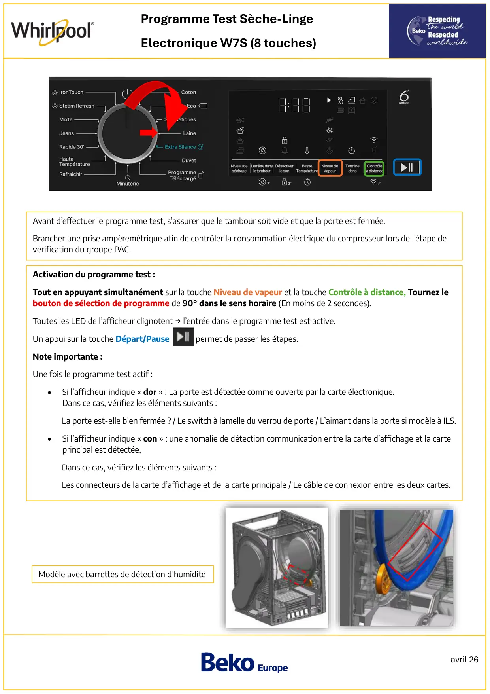
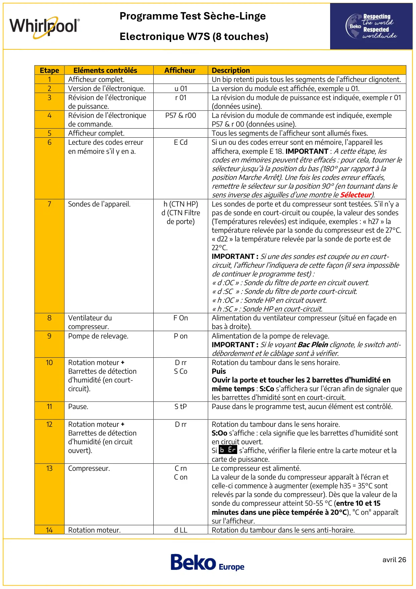
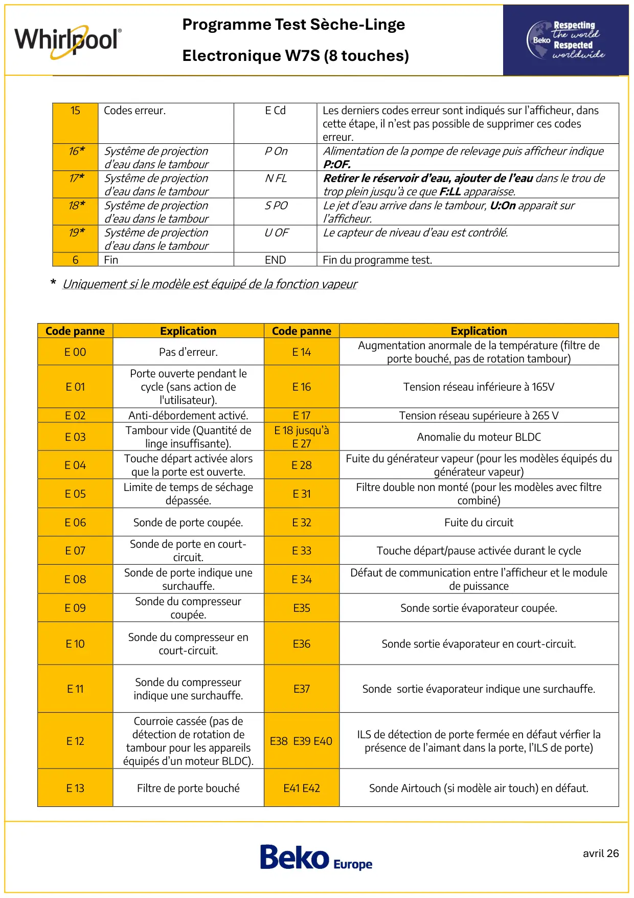

ProgTest seche linge PAC Whirlpool ElectroniqueD7S 8touches avec barette humidité

avril 26Programme Test Sèche-LingeElectronique W7S (8 touches)Activation du programme test :Tout en appuyant simultanément sur la touche Niveau de vapeur et la touche Contrôle à distance, Tournez lebouton de sélection de programme de 90° dans le sens horaire (En moins de 2 secondes).Toutes les LED de l’afficheur clignotent → l’entrée dans le programme test est active.Un appui sur la touche Départ/Pause permet de passer les étapes.Note importante :Une fois le programme test actif :•Si l’afficheur indique « dor » : La porte est détectée comme ouverte par la carte électronique.Dans ce cas, vérifiez les éléments suivants :La porte est-elle bien fermée ? / Le switch à lamelle du verrou de porte / L’aimant dans la porte si modèle à ILS.•Si l’afficheur indique « con » : une anomalie de détection communication entre la carte d’affichage et la carteprincipal est détectée,Dans ce cas, vérifiez les éléments suivants :Les connecteurs de la carte d’affichage et de la carte principale / Le câble de connexion entre les deux cartes.Avant d’effectuer le programme test, s’assurer que le tambour soit vide et que la porte est fermée.Brancher une prise ampèremétrique afin de contrôler la consommation électrique du compresseur lors de l’étape devérification du groupe PAC.Modèle avec barrettes de détection d’humidité
1 / 3
avril 26Programme Test Sèche-LingeElectronique W7S (8 touches)EtapeEléments contrôlésAfficheurDescription1Afficheur complet.Un bip retenti puis tous les segments de l’afficheur clignotent.2Version de l’électronique.u 01La version du module est affichée, exemple u 01.3Révision de l’électroniquede puissance.r 01La révision du module de puissance est indiquée, exemple r 01(données usine).4Révision de l’électroniquede commande.P57 & r00La révision du module de commande est indiquée, exempleP57 & r 00 (données usine).5Afficheur complet.Tous les segments de l’afficheur sont allumés fixes.6Lecture des codes erreuren mémoire s’il y en a.E CdSi un ou des codes erreur sont en mémoire, l’appareil lesaffichera, exemple E 18. IMPORTANT : A cette étape, lescodes en mémoires peuvent être effacés : pour cela, tourner lesélecteur jusqu’à la position du bas (180° par rapport à laposition Marche Arrêt). Une fois les codes erreur effacés,remettre le sélecteur sur la position 90° (en tournant dans lesens inverse des aiguilles d’une montre le Sélecteur).7Sondes de l’appareil.h (CTN HP)d (CTN Filtrede porte)Les sondes de porte et du compresseur sont testées. S’il n’y apas de sonde en court-circuit ou coupée, la valeur des sondes(Températures relevées) est indiquée, exemples : « h27 » latempérature relevée par la sonde du compresseur est de 27°C.« d22 » la température relevée par la sonde de porte est de22°C.IMPORTANT : Si une des sondes est coupée ou en court-circuit, l’afficheur l’indiquera de cette façon (il sera impossiblede continuer le programme test) :« d :OC » : Sonde du filtre de porte en circuit ouvert.« d :SC » : Sonde du filtre de porte court-circuit.« h :OC » : Sonde HP en circuit ouvert.« h :SC » : Sonde HP en court-circuit.8Ventilateur ducompresseur.F OnAlimentation du ventilateur compresseur (situé en façade enbas à droite).9Pompe de relevage.P onAlimentation de la pompe de relevage.IMPORTANT : Si le voyant Bac Plein clignote, le switch anti-débordement et le câblage sont à vérifier.10Rotation moteur +Barrettes de détectiond’humidité (en court-circuit).D rrS CoRotation du tambour dans le sens horaire.PuisOuvir la porte et toucher les 2 barrettes d’humidité enmême temps : S:Co s’affichera sur l’écran afin de signaler queles barrettes d’hmidité sont en court-circuit.11Pause.S tPPause dans le programme test, aucun élément est contrôlé.12Rotation moteur +Barrettes de détectiond’humidité (en circuitouvert).D rrRotation du tambour dans le sens horaire.S:Oo s’affiche : cela signifie que les barrettes d’humidité sonten circuit ouvert.Si s’affiche, vérifier la filerie entre la carte moteur et lacarte de puissance.13Compresseur.C rnC onLe compresseur est alimenté.La valeur de la sonde du compresseur apparaît à l'écran etcelle-ci commence à augmenter (exemple h35 = 35°C sontrelevés par la sonde du compresseur). Dès que la valeur de lasonde du compresseur atteint 50-55 °C (entre 10 et 15minutes dans une pièce tempérée à 20°C), "C on" apparaîtsur l'afficheur.14Rotation moteur.d LLRotation du tambour dans le sens anti-horaire.
2 / 3
avril 26Programme Test Sèche-LingeElectronique W7S (8 touches)15Codes erreur.E CdLes derniers codes erreur sont indiqués sur l’afficheur, danscette étape, il n’est pas possible de supprimer ces codeserreur.16*Systême de projectiond’eau dans le tambourP OnAlimentation de la pompe de relevage puis afficheur indiqueP:OF.17*Systême de projectiond’eau dans le tambourN FLRetirer le réservoir d’eau, ajouter de l’eau dans le trou detrop plein jusqu’à ce que F:LL apparaisse.18*Systême de projectiond’eau dans le tambourS POLe jet d’eau arrive dans le tambour, U:On apparait surl’afficheur.19*Systême de projectiond’eau dans le tambourU OFLe capteur de niveau d’eau est contrôlé.6FinENDFin du programme test.Code panneExplicationCode panneExplicationE 00Pas d’erreur.E 14Augmentation anormale de la température (filtre deporte bouché, pas de rotation tambour)E 01Porte ouverte pendant lecycle (sans action del'utilisateur).E 16Tension réseau inférieure à 165VE 02Anti-débordement activé.E 17Tension réseau supérieure à 265 VE 03Tambour vide (Quantité delinge insuffisante).E 18 jusqu’àE 27Anomalie du moteur BLDCE 04Touche départ activée alorsque la porte est ouverte.E 28Fuite du générateur vapeur (pour les modèles équipés dugénérateur vapeur)E 05Limite de temps de séchagedépassée.E 31Filtre double non monté (pour les modèles avec filtrecombiné)E 06Sonde de porte coupée.E 32Fuite du circuitE 07Sonde de porte en court-circuit.E 33Touche départ/pause activée durant le cycleE 08Sonde de porte indique unesurchauffe.E 34Défaut de communication entre l’afficheur et le modulede puissanceE 09Sonde du compresseurcoupée.E35Sonde sortie évaporateur coupée.E 10Sonde du compresseur encourt-circuit.E36Sonde sortie évaporateur en court-circuit.E 11Sonde du compresseurindique une surchauffe.E37Sonde sortie évaporateur indique une surchauffe.E 12Courroie cassée (pas dedétection de rotation detambour pour les appareilséquipés d’un moteur BLDC).E38 E39 E40ILS de détection de porte fermée en défaut vérfier laprésence de l’aimant dans la porte, l’ILS de porte)E 13Filtre de porte bouchéE41 E42Sonde Airtouch (si modèle air touch) en défaut.* Uniquement si le modèle est équipé de la fonction vapeur
3 / 3